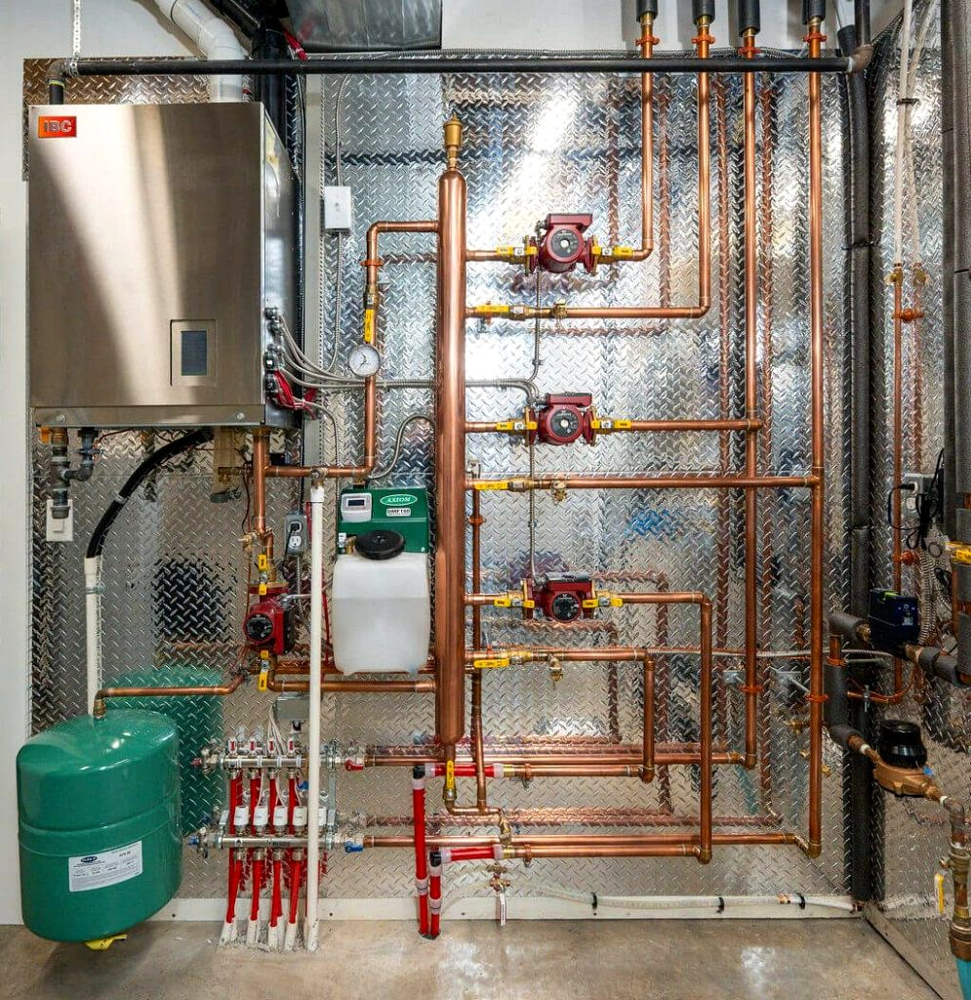

Water Heater Repair
Service and repair support for common water heater and hot-water plumbing problems.

MIS Mechanical Ltd. provides professional water heater repair, replacement and installation support for residential and commercial properties across Vancouver and the Lower Mainland. For urgent water-heater plumbing problems, our 24/7 emergency plumbing service is also available.
When a water heater is not working properly, we assess the plumbing and equipment and recommend a practical repair, replacement or installation solution appropriate to the project.
Service and repair support for common water heater and hot-water plumbing problems.
Professional plumbing support for replacing an existing water heater or installing a new system.
Assessment and repair of plumbing connected to hot water systems, including urgent issues.
We provide water heater and plumbing service in Vancouver, Burnaby, Richmond, Coquitlam and communities throughout the Lower Mainland. If you are looking for water heater repair, replacement or installation near you, contact MIS Mechanical to discuss the system and service availability.